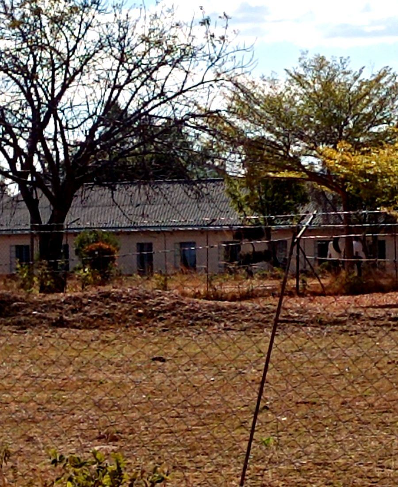
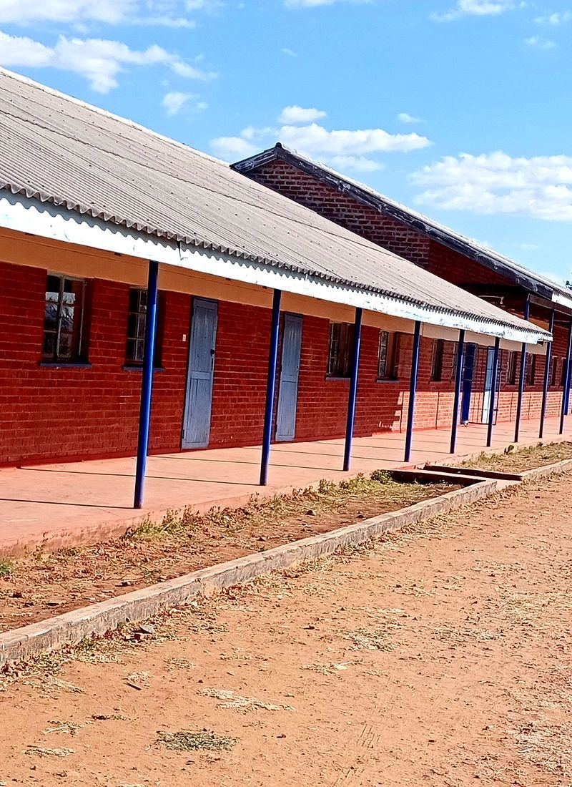
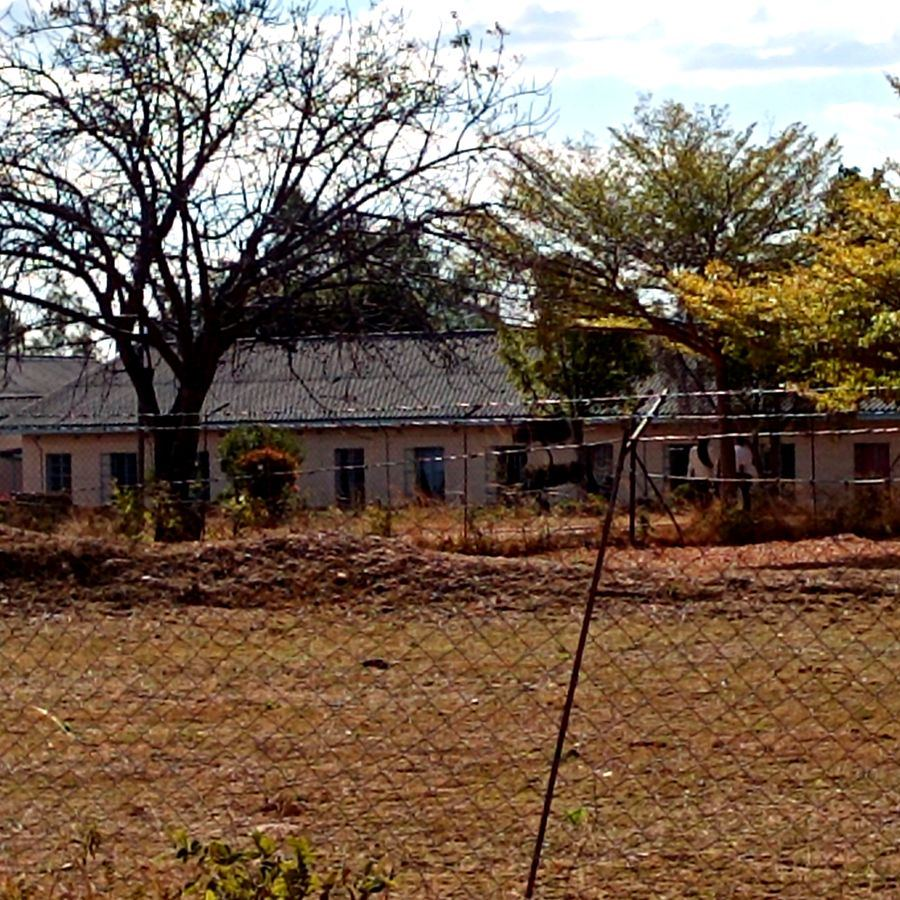
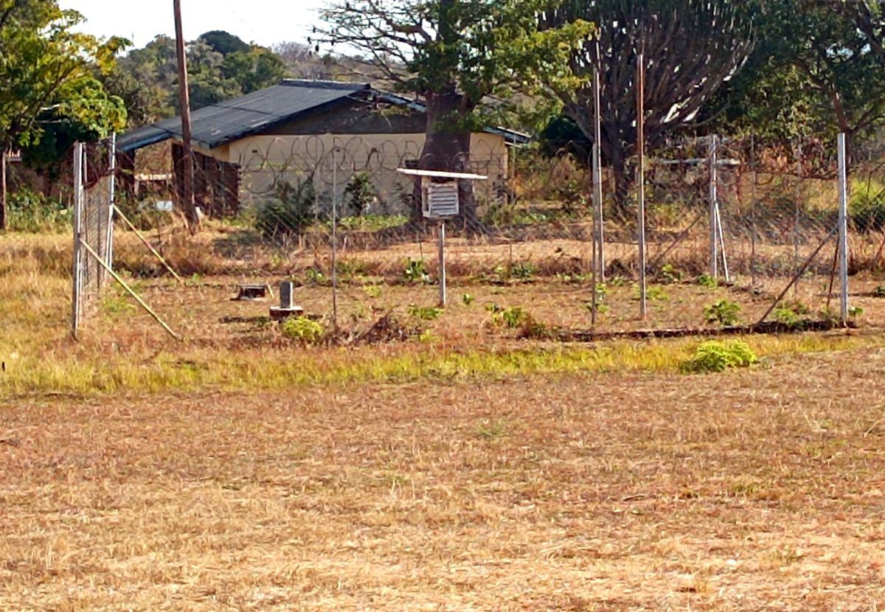
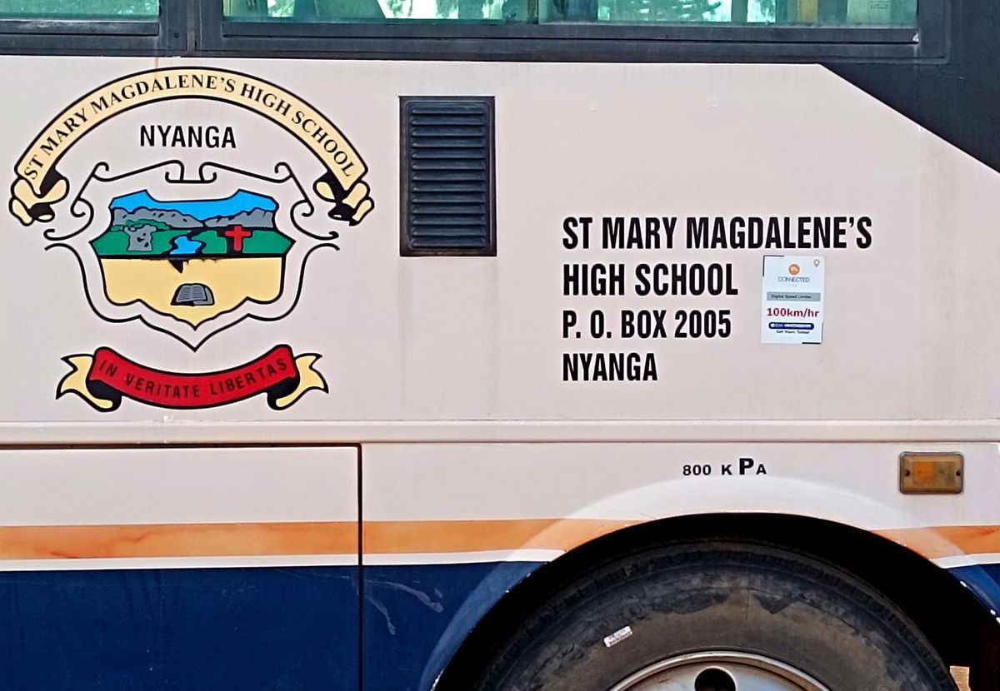

From a small Anglican mission boarding school in 1948 to a top-performing centre of academic excellence in Manicaland today.
St. Mary Magdalene's High School was founded in 1948 by the Anglican Diocese of Manicaland, opening its doors to the first boarders in the Nyanga district of the Eastern Highlands.
From its earliest years, the school was built on a simple conviction: that a Christian education — disciplined, compassionate, and academically rigorous — could shape young people into leaders of character, wherever life would take them.
Today, the school continues that mission as a co-educational boarding institution, following the ZIMSEC curriculum across Sciences, Commercials, and Arts. In 2025, that approach delivered a 100% A-Level pass rate and 94% at O-Level, placing the school 38th in Manicaland Province.
The school remains under the pastoral guidance of the Anglican Diocese of Manicaland, with chapel life, moral formation, and community service woven into the rhythm of every term — supported by boreholes, solar pumps, and a school farm project that feeds the boarding community.

Education extends past the syllabus — academic instruction paired with spiritual guidance and the daily discipline of boarding life.
Anglican faith and practice shape students in honesty, humility, and service — values meant to outlast any single exam result.
A structured ZIMSEC programme across Sciences, Commercials, and Arts — and pass rates in 2025 that prove the approach works.
"At St. Mary Magdalene's, we believe every student carries within them the capacity for both academic achievement and moral excellence. Our 2025 results — a 100% A-Level pass rate among them — are proof of what's possible when discipline, faith, and good teaching meet. We invite you to visit our campus and see for yourself."



